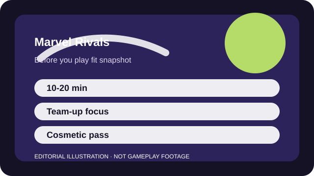

BEFORE YOU PLAY
What this page is and is not
This is a sourced editorial fit profile. It is designed to help with a yes-or-no play decision, and it does not claim a scored hands-on review.
The early hook is character experimentation. If swapping between recognizable heroes feels exciting, the fit is straightforward. If you want minimal overlap and cleaner visuals, the game can feel crowded fast.
The first-session loop to judge is simple: Choose a hero fantasy you enjoy, layer team-up synergies on top, and use objective pressure instead of only duel skill.
Hero familiarity and matchup knowledge matter more than account power.

FIT SNAPSHOT
Marvel Rivals at a glance
| Genre | Third-person hero shooter |
|---|---|
| Platforms | PC, PlayStation, Xbox |
| Business model | Free-to-play hero shooter with cosmetic monetization and seasonal progression. |
| Typical session | 10-20 minute matches with fast hero experimentation up front. |
| Play style | hero fantasy team combat |
| Learning barrier | The hero fantasy is easy to understand, but large rosters and overlapping effects raise the knowledge load over time. |
| Social shape | Easy to sample solo, yet team-up interactions and focus fire feel much better with friends or steady pings. |
WHO IT FITS
Best fit, likely friction, and the social reality
players who want accessible hero-shooter action and already enjoy Marvel character fantasy
players who dislike crowded visuals or want a minimal-ability shooter
Easy to sample solo, yet team-up interactions and focus fire feel much better with friends or steady pings.
Hero familiarity and matchup knowledge matter more than account power.
FIRST SESSION PLAN
How to test the fit in one evening
- Try three heroes from different roles before deciding what the roster feels like.
- Use one easy combo repeatedly so your first wins come from execution, not chaos.
- Follow the objective UI instead of letting the hero fantasy pull you into every duel.
- Turn on accessibility and subtitle options before ranked-style play starts to matter.
Use the first session to answer these fit questions instead of judging rank, win rate, or store value immediately.
- Do you want broad hero fantasy more than realistic shooting discipline?
- Will a large roster energize you or overwhelm you?
- Are you mostly looking for casual team action rather than a tight tactical ladder?
TIME, COST, AND COMMITMENT
What you are really signing up for
| Session budget | 10-20 minute matches with fast hero experimentation up front. |
|---|---|
| Social demand | Easy to sample solo, yet team-up interactions and focus fire feel much better with friends or steady pings. |
| Progression shape | Hero familiarity and matchup knowledge matter more than account power. |
| Spending pressure | Core play is free. Spending is centered on cosmetics and seasonal extras. |
Quick sessions work well, though the roster is large enough that serious improvement still means narrowing to a few mains.
Core play is free. Spending is centered on cosmetics and seasonal extras.
SOURCES AND LIMITS
What was checked, and what can change
- Hero balance and team-up interactions can move rapidly in a live roster game.
- New hero releases may reshape what counts as beginner-friendly.
- Seasonal cosmetic plans will change more often than the core question of whether the hero sandbox suits you.
This profile uses official game pages and defensible general product knowledge to frame the player fit. It does not claim live testing across every platform, accessibility need, or current event rotation.